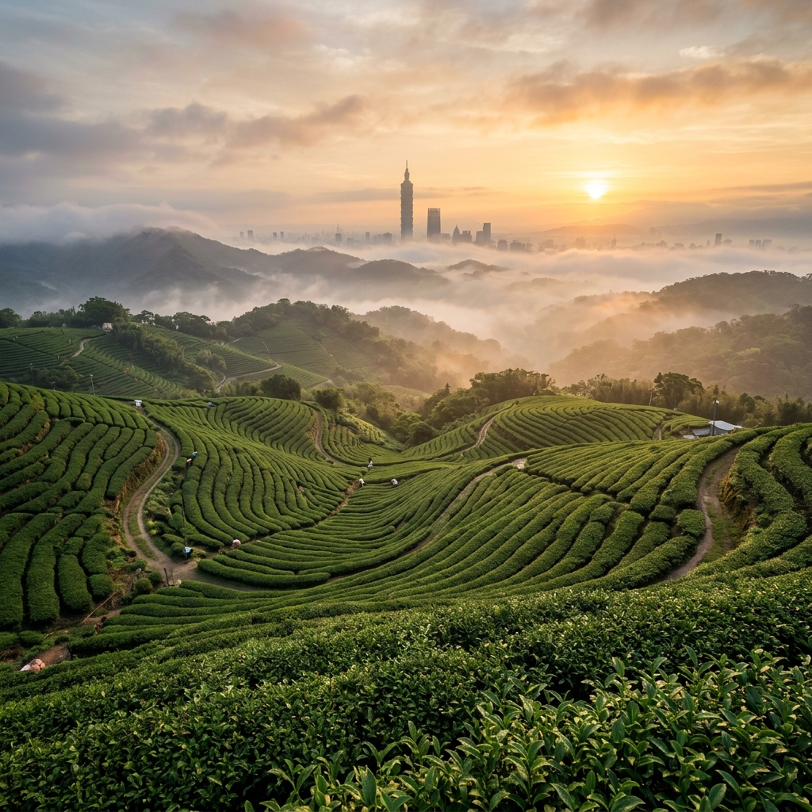

Exploring Wenshan District
在茶香與山林間
在茶香與山林間
發現木柵的深度靈魂
不只是動物園與纜車。穿梭於清代遺留的木柵小徑、細品百年傳承的鐵觀音。這裡的每一寸土地都訴說著先人的故事，邀請您與我們一同深入這片台北南區的世外桃源。
展開深度旅程
不只是動物園與纜車。穿梭於清代遺留的木柵小徑、細品百年傳承的鐵觀音。這裡的每一寸土地都訴說著先人的故事，邀請您與我們一同深入這片台北南區的世外桃源。
展開深度旅程透過鏡頭，搶先體驗木柵的茶香、山林與人文氣息。點擊播放，開啟您的專屬旅程。
「木柵」之名起源於清代，當時先民為防禦周邊部隊的侵擾，在景美溪畔與山麓間築起了一道道堅實的木製柵欄，這便是這片土地守護家園的初步印記。
到了十九世紀末，茶葉開啟了木柵的黃金年代。張氏兩兄弟從福建安溪引進了「鐵觀音」茶苗，並發現貓空紅土質與氣候極其適合其生長。經過百年的傳承與揉捻，木柵鐵觀音以其厚實的喉韻與特殊的熟果香，成為了台灣茶文化的代表。
今日的木柵，雖然柵欄已逝，但那份守護傳統與自然的韌性依然深植於此。從老屋新生到環境保育，我們在現代城市的邊緣，保留了最純粹的靈魂。

從百年香火鼎盛的廟宇到絕美的現代圖書館，木柵擁有全台北最具多樣性與深度的休閒地標，適合安排半日或一日遊。
搭乘底部透明的水晶車廂鳥瞰大台北盆地，抵達山頂後品嚐正宗鐵觀音茶。這裡是結合賞夜景、品茶文化與自然步道的最佳去處。
貓空纜車於2007年正式啟用，全長4.03公里，是台北市第一條、也是目前唯一的高空纜車系統。整趟旅程約20至30分鐘，最受遊客歡迎的莫過於底部由強化玻璃製成的「水晶車廂（貓纜之眼）」。在車廂內，你不僅能享受彷彿在樹冠層上滑行的刺激感，隨著海拔爬升，還能將台北盆地與地標台北101的美景盡收眼底。
到達纜車終點「貓空站」後，迎面而來的是滿山的茶園與清新的空氣。木柵是台灣著名「鐵觀音茶」的發源地，當地保有超過五十家以上的景觀茶坊。這裡的茶文化有別於一般手搖飲，講究的是泡茶的儀式感與茶葉的喉韻。
無論是白天來此品茗、享用特色的茶葉料理，還是夜晚與三五好友吹著山區微風、俯瞰繁華的城市夜景，都是極致的享受。強烈建議下午時分搭乘纜車上山，一次將日落黃昏與百萬夜景收集齊全。

全台最大的動物園，近年全新落成的「穿山甲館」打造熱帶雨林沉浸式體驗。園區廣大且自然綠化完善，是週末放電與生態教育的完美場所。
創立於1914年的臺北市立動物園（俗稱木柵動物園），佔地高達165公頃，是全台面積最大、更是亞洲最大的動物園之一。園區設計採用了先進的「地理生態展示法」，以無柵欄、隱藏式壕溝的方式，讓動物能在盡可能接近自然棲地的環境中生活，同時也讓遊客有更親近自然的感受。
園區內除了大家熟知的超人氣明星「大貓熊」、「無尾熊」和「國王企鵝」外，近年來最受矚目的絕對是全新落成的「熱帶雨林室內館（穿山甲館）」。這座巨大的流線型溫室建築，內部完美融合了水域、樹林與空中步道，遊客走在其中能近距離觀察樹懶、水豚、棉頭絹猴等珍稀動物，彷彿一秒置身亞馬遜叢林。
此外，台灣動物區也是極具教育意義的一區，這裡保育了台灣黑熊、石虎等本土珍貴物種，展現了動物園在生態保育上的重要貢獻。
擁有超過130年歷史的道教聖地。不僅建築氣勢宏偉，近年更打破「情侶分手」傳說，設立了浪漫的情人聖地與祈福步道。
指南宮建於清光緒16年（1890年），主祀八仙中的純陽祖師呂洞賓（民間尊稱仙公），是台灣最具代表性的道教聖地之一。廟宇建築依山而建，氣勢宏偉，涵蓋了純陽寶殿、凌霄寶殿、大雄寶殿及地藏王寶殿，是台灣少見儒、道、釋三教同尊的宗教聖地。
過去在坊間曾流傳著「情侶一起去指南宮就會分手」的都市傳說。但事實上這是一場誤會！廟方曾特別澄清，呂洞賓神明慈悲，只會斬斷「爛桃花」與不適合的孽緣，對於真正的好姻緣反而會給予庇佑。為了破除迷思，指南風景區近年更在後山設立了浪漫的「情人聖地」、月老意象與祈福鐘，成為許多情侶打卡的新熱點。
如果不搭纜車或公車，極度推薦從山下走「指南宮千階親山步道」上山。這條步道兩側佇立著數十座從日治時期保留下來的石燈籠，造型古樸，走在被古木參天包圍的石階上，充滿了濃厚的歷史人文氣息與莊嚴寧靜的美感。

被網友封為「全台最美大學圖書館」。清水模外觀倒映在滯洪池畔，內部高達七層樓的層退式書牆設計，宛如置身魔法學院。
位於國立政治大學校區內的「達賢圖書館」，自2019年落成以來，便因其絕美的外觀與極具巧思的內部空間設計，被眾多網友與媒體封為「全台最美大學圖書館」。建築外觀採用沉穩內斂的清水模設計，周圍環繞著綠意盎然的大草皮與景觀滯洪池，天氣好時，圖書館的身影倒映在湖面上，令人驚艷。
走進圖書館內部，最吸睛的莫過於壯觀的「層退式」書架牆與高達七層樓的挑高天井設計。陽光透過大片天窗與玻璃帷幕灑落，光影變化豐富，一圈又一圈環繞向上的書牆，宛如讓人置身於霍格華茲魔法學院的圖書館之中。
這座圖書館不僅外觀迷人，內部更結合了創客空間、VR體驗區、影音製播室等多功能設施，完美展現了現代綠建築美學與大學學術實用性的結合。即使不是政大校友，也非常值得來此感受寧靜的書香氛圍。
木柵是許多美食家的藏寶圖。從傳承數十年的眷村老味、政大學生排隊名單，到景美溪畔的文青老屋咖啡，絕對能滿足你挑剔的味蕾。

由廢棄長達20年的舊車庫改造而成的工業風老屋咖啡廳，曾獲文化部老屋新生大獎。自家烘焙精品咖啡配上限量手工甜點，文青必訪。
隱身在木柵路三段、緊鄰景美溪畔的「小廢墟咖啡 Ruins Coffee Roasters」，它的前身真的是一間荒廢長達20年、堆滿雜物的破舊車庫。主理人洪璽開耗時數月親手打理改造，將其化身為充滿濃厚美式工業風與頹廢美學的咖啡空間，這項創舉更讓它榮獲了2016年「台北老屋新生大獎」的銀獎。
走進店內，你可以看見刻意保留的斑駁磚牆、裸露的木造屋頂結構與各式老件家具，充滿了時間的刻痕。除了絕佳的空間氛圍，這裡更是專業的自家烘焙咖啡館。咖啡豆品質極佳，喜歡品嚐咖啡原味的行家，強烈建議點一杯「單品手沖咖啡」。
不喝咖啡的人也別擔心，店內的奶茶與氣泡飲同樣用心。此外，他們每日限量製作的手工甜點（如冬季限定的草莓戚風蛋糕、濃郁的巴斯克乳酪蛋糕、布朗尼等）都具備極高水準。二樓的閣樓座位區隱密性高，配上窗外的微風，是許多文青私藏的秘密基地。
📍 地址： 台北市文山區木柵路三段242號

政大學生心中的神級美食！主打陝西風味，清甜不羶的羊肉湯搭配需自己手撕的酥脆「饃餅」，冬天來一碗瞬間暖胃。
說到政大周邊的神級美食，絕對少不了這家位於巷弄內、主打陝西道地麵食的「江記水盆羊肉」。每到用餐時間，店門外總是大排長龍，深受政大學生與在地居民的推崇。
招牌「水盆羊肉」上桌時，是一大碗清澈的高湯與一塊烤得酥脆厚實的「饃餅」。店裡最道地的吃法，是客人必須親手將饃餅撕成約「花生米」大小的碎塊，再放入湯中。羊肉選用優質部位，燉得極為軟嫩且毫無腥羶味；吸收了羊肉鮮甜與淡淡中藥材香氣的碎饃，吃起來口感Q彈有嚼勁，不僅飽足感滿分，冷天吃更是超級暖胃。
除了水盆羊肉，帶有濃郁蒜香、醋酸與辣子風味的「油潑麵（又稱Biang Biang麵）」，那寬大如腰帶的麵條嚼勁十足，也是店內的超人氣必點。由於店內座位不多，建議避開尖峰時段前往。
📍 地址： 台北市文山區指南路二段45巷12號

木柵在地經營數十年的老字號眷村味。招牌醬牛肉、富含膠質的豬腳凍與各式滷味，搭配熱騰騰的醡醬麵，是充滿溫度的老味道。
位於木柵路上的三老村，外觀樸實無華，甚至有些不起眼，但它卻是木柵地區首屈一指的眷村料理老店。這裡傳承了數十年的好手藝，是許多老木柵人從小吃到大的共同回憶。
一走進店內，目光絕對會被門口那一整櫃的「冷盤滷味」給吸引。店內最著名的招牌是「醬牛肉」，肉質緊實、滷汁帶有特殊香料氣息且不死鹹；另一道必點的「豬腳凍」則富含滿滿的膠質，入口即化，冰涼的口感非常開胃。另外還有入味的素雞、豆干與海帶，點滿一大盤切料是來這用餐的標配。
主食部分，極度推薦他們的「山東大水餃」，皮Q餡多；或者點一碗香氣四溢的「醡醬麵」。吃的時候一定要配上店內特製的辣椒醬與生大蒜，那種純粹而厚實的眷村家常味，吃的是一種情懷，絕對讓你一吃成主顧。
📍 地址： 台北市文山區木柵路三段5號

來到木柵絕不能錯過將在地特產「鐵觀音」入菜的風味料理。茶油麵線、茶香土雞與酥脆的炸茶葉，邊吃邊看夜景是最大享受。
來到貓空，除了找間茶坊泡茶聊天，這裡更發展出了木柵獨樹一格的「茶葉料理」。由於木柵盛產鐵觀音與包種茶，許多在地經營數十年的景觀餐廳（例如知名的「四哥的店」或以大廚手藝聞名的「阿義師的大茶壺」），便發揮創意，將茶葉巧妙地融入傳統台菜之中。
經典的必點菜色包括：滑順且帶有淡淡獨特香氣的「茶油麵線」、肉質緊實且帶有茶葉清香的「茶葉放山雞（或茶油雞）」、極具創意且口感猶如海苔般酥脆的「炸茶葉」，以及清爽解膩、湯頭回甘的「鐵觀音雞湯」。飯後如果還有胃口，千萬別錯過在地限定的「鐵觀音霜淇淋」，濃郁的茶香帶點微苦，完美解除了正餐的油膩。
傍晚時分，強烈建議選擇一家擁有戶外座位的景觀餐廳，邊品嚐這些充滿在地特色的茶香佳餚，邊欣賞台北盆地逐漸亮起的璀璨燈火，這絕對是木柵最經典、最不容錯過的旅遊體驗。
📍 建議地點： 貓空纜車站周邊步道沿線餐廳，假日建議提前訂位。
木柵的魅力隨季節更迭。無論是春天的花海、夏天的清涼溪水，還是冬天的暖心熱茶，每一季都有驚喜。
2月至3月是木柵最浪漫的時刻。樟樹步道的魯冰花海鋪滿大地，杏花林則開滿粉嫩花朵，是攝影愛好者的天堂。
炎炎夏日，躲進貓空的山間茶屋，吹著自然微風。或者沿著景美溪畔騎行，感受河面的涼意與綠意。
秋高氣爽最適合挑戰猴山岳或漫步仙跡岩。在能見度極高的日子裡，從山頂遠眺，台北101近在咫尺。
低溫時分，來一碗熱騰騰的江記水盆羊肉，配上剛出爐的饃餅。再上山泡一壺濃郁的鐵觀音，身心皆暖。
搭乘文湖線至「動物園站」可抵達動物園與纜車起點；至「萬芳醫院站」或「木柵站」可轉乘多線公車。
棕15、小10 可直達貓空各茶屋；236、660 則是往返公館與市中心的主幹道。
全票 $120，持悠遊卡更方便。建議平日搭乘避開人潮，水晶車廂需現場排隊或預約。
互動式地圖載入中...
(此處可嵌入 Google Maps 顯示景點位置)
穿上運動鞋，從平緩的河濱自行車道到需要手腳並用的原始山林步道，在木柵大口呼吸芬多精，釋放你的活力。
沿著景美溪畔延伸至政大。沿途綠草如茵，傍晚騎乘微風徐徐，夕陽映照河面，是慢跑與單車愛好者的天堂。
景美溪自行車道是一條沿著景美溪畔蜿蜒的綠色廊道，一路從新店、景美連接至木柵動物園與政大，全長約15公里。由於路面平坦寬敞，且與汽機車道完全隔離，非常適合全家大小一同安全騎乘或慢跑。
沿線的河濱公園規劃完善，設有許多體健設施、籃球場、溜冰場以及廣闊的綠地。秋季時，河畔的芒草隨風搖曳，白茫茫的景色如畫；傍晚時分，夕陽餘暉映照在清澈的河面上，更是浪漫至極。
推薦玩法： 可以從捷運景美站或公館站附近租借 YouBike，沿著河岸一路悠閒往南騎至貓空纜車站或政大周邊，還車後順道在政大商圈品嚐在地美食，是一趟健康又充實的半日遊。
無障礙平緩步道。春季魯冰花盛開宛如黃色繁星；秋天有波斯菊。沿途重現牛車、穀倉等農村意象，極適合長輩。
貓空樟樹步道前身為貓空地區早期的保甲路線（運送茶葉的牛車道），如今已被臺北市政府精心規劃為一條充滿農村風情的休閒步道。步道全長僅約1.1公里，最大的特色是幾乎沒有高低起伏的階梯，全程鋪設平整的石板，是一條對長輩、輪椅或嬰兒車都非常友善的「無障礙步道」。
這裡四季皆有不同的美景。每年2至3月是著名的「魯冰花季」，金黃色的花海交織著翠綠的茶園，宛如大地的黃色繁星，是攝影愛好者的聖地；到了秋季，則有粉白相間的波斯菊盛開。
漫步在步道途中，你會發現設計者的巧思：重現了早期農村的牛車、轉角炭窯、豬舍與穀倉等意象。中段設有古樸的「彩雲亭」可供休憩，倚靠欄杆欣賞明鏡池的波光粼粼與落羽松，充滿濃濃的鄉土情懷與歲月靜好的氛圍。
位於景美木柵交界，傳說有呂洞賓留下的足跡。階梯步道多在樹林間，山頂平台可近距離270度俯瞰台北101。
仙跡岩又稱景美山，位於景美與木柵的交界處。雖然最高點海拔僅144公尺，但因為周邊幾乎無高樓阻擋，擁有極佳的視野。這是一條非常親民、適合全家大小在週末午後前往的入門級親山步道。登山口多達十餘處，最便利的入口距離捷運景美站僅需步行幾分鐘。
步道多為鋪設良好的石階與木棧道，兩旁大樹成蔭、生態豐富，即使是炎熱的夏天，走在林間也相當涼爽舒適。關於「仙跡岩」的名稱由來，是因為山頂附近有一塊巨石，上面有著狀似腳印的凹洞，民間傳說這是八仙之一的呂洞賓下凡時所留下的足跡，為這座山增添了神話色彩。
登頂後的觀景平台是整趟路線的高潮。從這裡可以270度俯瞰南台北市區，甚至能清晰、毫無遮蔽地看到台北101大樓。因此，這裡也是許多內行攝影玩家拍攝跨年煙火的熱門秘境，不用去象山人擠人，也能拍出絕美大片。
喜歡刺激的登山客絕不能錯過！前段需要手腳並用攀爬近乎垂直的岩壁，登頂後視野開闊，可俯瞰整個大台北。
如果你覺得一般的木棧道太過無聊，那麼猴山岳絕對能滿足你的冒險精神！猴山岳位於二格山系，海拔551公尺，是一條充滿野趣與高度挑戰性的登山路線，也是許多準備攀登百岳的登山客愛用的訓練場。最經典的路線是從指南宮後山出發。
這條步道最著名、也最刺激的特色，就是會遇到一段近乎垂直（約70-80度傾角）的「猴山岳前峰攀岩段」。在這裡，你必須將登山杖收起，全程手腳並用，拉著廟方與熱心山友架設的粗大繩索，踏著裸露的樹根與岩縫，宛如猴子般奮力攀爬而上（強烈建議自備防滑手套以免磨破手）。
雖然攀爬過程十分考驗體力與膽識，但當你滿頭大汗登頂前峰的那一刻，迎面而來的開闊視野絕對值回票價。天氣晴朗時，可以清楚看見整個台北盆地、遠處的觀音山，甚至大屯山系。下山時若不想原路陡降，可選擇銜接茶展中心步道，一路漫步返回貓空，找間茶坊喝茶慰勞自己的辛勞。
木柵的四季擁有截然不同的面貌，無論何時到訪都能發現驚喜。
2-3月樟樹步道魯冰花盛開，隨後杏花林與櫻花相繼綻放，是攝影愛好者的天堂。
景美溪畔微風徐徐，或搭乘纜車上山，在海拔300公尺的茶屋享受比市中心低3度的清涼。
氣候涼爽最適宜攀爬指南宮千階步道或猴山岳，登高望遠，能見度是一年之中最高的季節。
在冷風中來一碗溫潤的水盆羊肉，或在貓空茶屋圍爐煮茶，體驗最溫馨的台北冬日。
搭乘文湖線至「動物園站」可抵達動物園與纜車站；至「萬芳醫院站」或「木柵站」可轉乘多線公車。
搭乘 236、660、933 或 綠1 等路線至「政大」或「木柵市場」站，穿梭各景點極為便利。
經國道三號（木柵交流道）下，沿著木柵路即可進入核心區域。周邊設有多處公有停車場。

點擊開啟 Google Maps 導覽